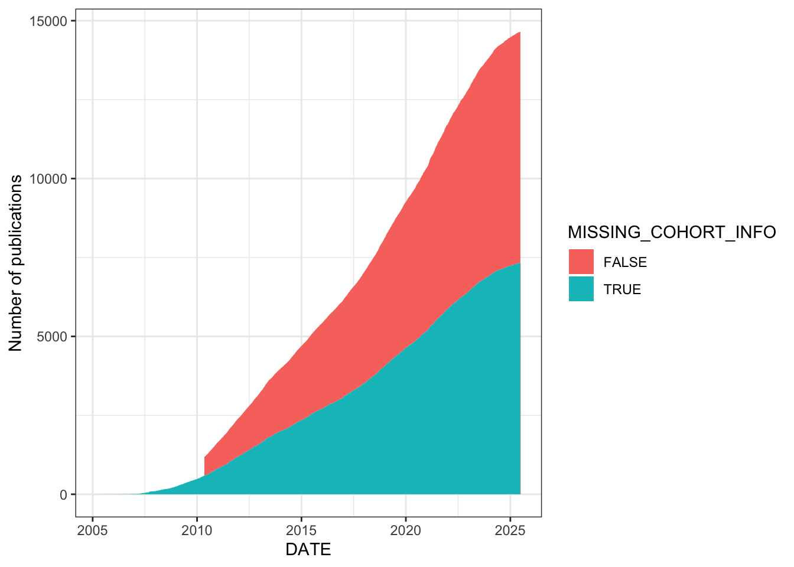
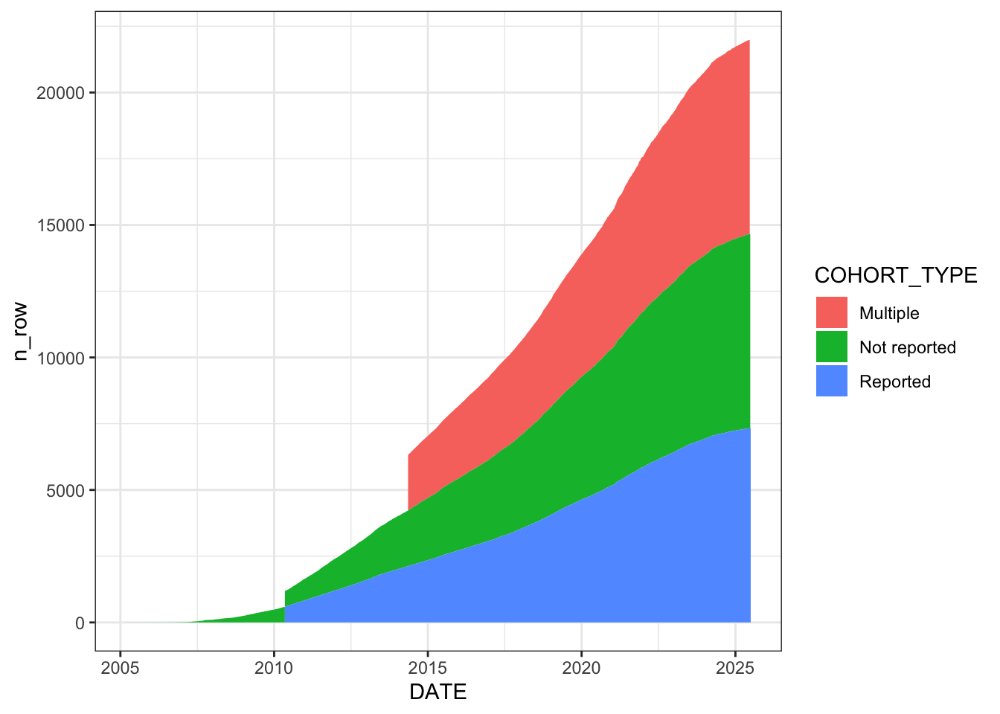
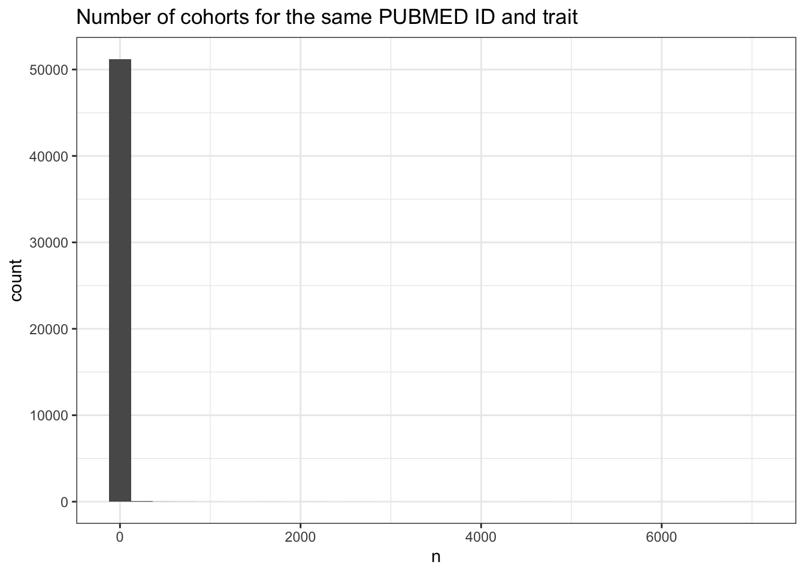

Last updated: 2026-03-24
Checks: 7 0
Knit directory:
genomics_ancest_disease_dispar/
This reproducible R Markdown analysis was created with workflowr (version 1.7.2). The Checks tab describes the reproducibility checks that were applied when the results were created. The Past versions tab lists the development history.
Great! Since the R Markdown file has been committed to the Git repository, you know the exact version of the code that produced these results.
Great job! The global environment was empty. Objects defined in the global environment can affect the analysis in your R Markdown file in unknown ways. For reproduciblity it’s best to always run the code in an empty environment.
The command set.seed(20220216) was run prior to running
the code in the R Markdown file. Setting a seed ensures that any results
that rely on randomness, e.g. subsampling or permutations, are
reproducible.
Great job! Recording the operating system, R version, and package versions is critical for reproducibility.
Nice! There were no cached chunks for this analysis, so you can be confident that you successfully produced the results during this run.
Great job! Using relative paths to the files within your workflowr project makes it easier to run your code on other machines.
Great! You are using Git for version control. Tracking code development and connecting the code version to the results is critical for reproducibility.
The results in this page were generated with repository version aabb42f. See the Past versions tab to see a history of the changes made to the R Markdown and HTML files.
Note that you need to be careful to ensure that all relevant files for
the analysis have been committed to Git prior to generating the results
(you can use wflow_publish or
wflow_git_commit). workflowr only checks the R Markdown
file, but you know if there are other scripts or data files that it
depends on. Below is the status of the Git repository when the results
were generated:
Ignored files:
Ignored: .DS_Store
Ignored: .Rproj.user/
Ignored: .venv/
Ignored: Aus_School_Profile.xlsx
Ignored: BC2GM/
Ignored: BioC.dtd
Ignored: FormatConverter.jar
Ignored: FormatConverter.zip
Ignored: SeniorSecondaryCompletionandAchievementInformation_2025.xlsx
Ignored: analysis/.DS_Store
Ignored: ancestry_dispar_env/
Ignored: code/.DS_Store
Ignored: code/full_text_conversion/.DS_Store
Ignored: data/.DS_Store
Ignored: data/RCDCFundingSummary_01042026.xlsx
Ignored: data/cdc/
Ignored: data/cohort/
Ignored: data/epmc/
Ignored: data/europe_pmc/
Ignored: data/gbd/.DS_Store
Ignored: data/gbd/IHME-GBD_2021_DATA-d8cf695e-1.csv
Ignored: data/gbd/IHME-GBD_2023_DATA-73cc01fd-1.csv
Ignored: data/gbd/gbd_2019_california_percent_deaths.csv
Ignored: data/gbd/ihme_gbd_2019_global_disease_burden_rate_all_ages.csv
Ignored: data/gbd/ihme_gbd_2019_global_paf_rate_percent_all_ages.csv
Ignored: data/gbd/ihme_gbd_2021_global_disease_burden_rate_all_ages.csv
Ignored: data/gbd/ihme_gbd_2021_global_paf_rate_percent_all_ages.csv
Ignored: data/gwas_catalog/
Ignored: data/icd/.DS_Store
Ignored: data/icd/2025AA/
Ignored: data/icd/IHME_GBD_2019_COD_CAUSE_ICD_CODE_MAP_Y2020M10D15.XLSX
Ignored: data/icd/IHME_GBD_2019_NONFATAL_CAUSE_ICD_CODE_MAP_Y2020M10D15.XLSX
Ignored: data/icd/IHME_GBD_2021_COD_CAUSE_ICD_CODE_MAP_Y2024M05D16.XLSX
Ignored: data/icd/IHME_GBD_2021_NONFATAL_CAUSE_ICD_CODE_MAP_Y2024M05D16.XLSX
Ignored: data/icd/UK_Biobank_master_file.tsv
Ignored: data/icd/cdc_valid_icd10_Sep_23_2025.xlsx
Ignored: data/icd/cdc_valid_icd9_Sep_23_2025.xlsx
Ignored: data/icd/hp_umls_mapping.csv
Ignored: data/icd/lancet_conditions_icd10.xlsx
Ignored: data/icd/manual_disease_icd10_mappings.xlsx
Ignored: data/icd/mondo_umls_mapping.csv
Ignored: data/icd/phecode_international_version_unrolled.csv
Ignored: data/icd/phecode_to_icd10_manual_mapping.xlsx
Ignored: data/icd/semiautomatic_ICD-pheno.txt
Ignored: data/icd/semiautomatic_ICD-pheno_UKB_subset.txt
Ignored: data/icd/umls-2025AA-mrconso.zip
Ignored: doccano_venv/
Ignored: figures/
Ignored: output/.DS_Store
Ignored: output/abstracts/
Ignored: output/cluster_tuning.csv
Ignored: output/doccano/
Ignored: output/fulltexts/
Ignored: output/gwas_cat/
Ignored: output/gwas_cohorts/
Ignored: output/icd_map/
Ignored: output/pubmedbert_entity_predictions.csv
Ignored: output/pubmedbert_entity_predictions.jsonl
Ignored: output/pubmedbert_predictions.csv
Ignored: output/pubmedbert_predictions.jsonl
Ignored: output/supplement/
Ignored: output/text_mining_predictions/
Ignored: output/trait_ontology/
Ignored: population_description_terms.txt
Ignored: pubmedbert-cohort-ner-model/
Ignored: pubmedbert-cohort-ner/
Ignored: renv/
Ignored: spacy_venv_requirements.txt
Ignored: spacyr_venv/
Untracked files:
Untracked: analysis/get_supplement.Rmd
Untracked: code/extract_text/download_pmc_supplements_aws.sh
Untracked: code/full_text_conversion/html_to_xml.R
Untracked: code/test_cohort_desc_file.R
Untracked: code/text_mining_models/tokenise_data.py
Untracked: output/best_similarity_histogram.png
Untracked: output/cluster_tuning_plot.png
Untracked: output/cluster_tuning_plot_by_min_size.png
Untracked: output/similarities_histogram.png
Untracked: output/similarities_histogram_abstracts.png
Untracked: output/similarities_histogram_methods.png
Untracked: output/similarities_histogram_overlay.png
Untracked: schools.R
Unstaged changes:
Modified: analysis/cohort_dist.Rmd
Modified: analysis/disease_inves_by_ancest.Rmd
Modified: analysis/get_dbgap_ids.Rmd
Modified: analysis/get_full_text.Rmd
Modified: analysis/gwas_to_gbd.Rmd
Modified: analysis/index.Rmd
Modified: analysis/map_trait_to_icd10.Rmd
Modified: analysis/replication_ancestry_bias.Rmd
Modified: analysis/specific_aims_stats.Rmd
Modified: analysis/text_for_cohort_labels.Rmd
Modified: code/extract_text/sentence_embeddings.py
Modified: code/extract_text/spacy_obtain_sentences.py
Note that any generated files, e.g. HTML, png, CSS, etc., are not included in this status report because it is ok for generated content to have uncommitted changes.
These are the previous versions of the repository in which changes were
made to the R Markdown (analysis/missing_cohort_info.Rmd)
and HTML (docs/missing_cohort_info.html) files. If you’ve
configured a remote Git repository (see ?wflow_git_remote),
click on the hyperlinks in the table below to view the files as they
were in that past version.
| File | Version | Author | Date | Message |
|---|---|---|---|---|
| Rmd | aabb42f | IJbeasley | 2026-03-24 | Add comments etc. to cohort metadata investigations |
| html | 0f41fd6 | IJbeasley | 2026-03-24 | Build site. |
| Rmd | f5c2de5 | IJbeasley | 2026-03-24 | Add comments etc. to cohort metadata investigations |
| html | 4d4e007 | IJbeasley | 2025-08-21 | Build site. |
| Rmd | f7b8ab0 | IJbeasley | 2025-08-21 | Updating missing cohort investigations |
knitr::opts_chunk$set(echo = TRUE, message = FALSE, warning = FALSE)
library(data.table)
library(dplyr)
library(ggplot2)
library(stringr)This analysis investigates the extent and patterns of missing cohort information in the GWAS Catalog, and manually corrects cohort labels for specific studies where the information is available from the original publications.
# Load the cohort name-corrected study metadata (produced by an earlier processing step)
gwas_study_info <- fread(here::here("output/gwas_cohorts/gwas_cohort_name_corrected.csv"))
# Standardize column names (remove spaces) for easier programmatic access
gwas_study_info <- gwas_study_info |>
rename_all(~gsub(" ", "_", .x))
original_gwas_study_info <- fread(here::here("data/gwas_catalog/gwas-catalog-v1.0.3.1-studies-r2025-07-21.tsv")) |>
rename_all(~gsub(" ", "_", .x)) |>
select(-COHORT, -DATE)
gwas_study_info =
left_join(gwas_study_info,
original_gwas_study_info,
by = "PUBMED_ID") Flag studies as having missing cohort information if their COHORT field is empty, “mutiple” (a typo in the data), or “other”. The stacked area chart shows the cumulative number of studies over time, split by whether cohort info is missing. A substantial proportion of studies – particularly in the recent explosive growth period post-2015 – lack informative cohort labels.
# Flag studies with missing/uninformative cohort labels
gwas_study_info =
gwas_study_info |>
mutate(MISSING_COHORT_INFO = ifelse(COHORT == ""|COHORT == "mutiple"|COHORT == "other",
T,
F)
)
# missing by year, reducing over time
gwas_study_info |>
select(PUBMED_ID, DATE, MISSING_COHORT_INFO) |>
distinct() |>
mutate(YEAR = lubridate::year(DATE)) |>
group_by(YEAR) |>
summarise(n_missing = sum(MISSING_COHORT_INFO),
n_total = n(),
prop_missing = round(100 * n_missing / n_total, digits = 0))# A tibble: 21 × 4
YEAR n_missing n_total prop_missing
<dbl> <int> <int> <dbl>
1 2005 2 2 100
2 2006 8 8 100
3 2007 89 89 100
4 2008 147 147 100
5 2009 237 237 100
6 2010 329 330 100
7 2011 394 394 100
8 2012 392 393 100
9 2013 392 394 99
10 2014 350 352 99
# ℹ 11 more rows# Stacked area chart: cumulative studies over time, coloured by missing cohort info
gwas_study_info |>
select(PUBMED_ID, DATE, MISSING_COHORT_INFO) |>
distinct() |>
arrange(DATE) |>
mutate(n_row = row_number()) |>
ggplot(aes(x =DATE, y=n_row, fill = MISSING_COHORT_INFO)) +
geom_area(position = 'stack') +
theme_bw() +
labs(y = "Number of publications")
| Version | Author | Date |
|---|---|---|
| 0f41fd6 | IJbeasley | 2026-03-24 |
Which publications contribute the most studies with missing cohort info? The top offenders are PMID 34648354 (3,892 studies, known to use the Fenland cohort) and PMID 36482414 (2,334 studies, PrecisionLink Biobank / BCH Biobank). There are 5,617 PubMed IDs in total with at least one study missing cohort info.
# Rank PubMed IDs by number of studies with missing cohort info
gwas_study_info |>
filter(MISSING_COHORT_INFO) |>
group_by(PUBMED_ID) |>
summarise(n_studies = n()) |>
arrange(desc(n_studies))# A tibble: 6,087 × 2
PUBMED_ID n_studies
<int> <int>
1 39024449 7537
2 34648354 3892
3 39789286 3049
4 36482414 2334
5 39271676 2212
6 40545721 780
7 31882771 734
8 33563976 720
9 34610981 592
10 34239129 439
# ℹ 6,077 more rows# Notes on top PubMed IDs with missing cohort info:
# 34648354 -> Fenland cohort
# 36482414 -> PrecisionLink Biobank / BCH BiobankThis section manually fills in missing cohort labels for specific studies by looking up the original publications. These corrections address studies that had empty COHORT fields in the GWAS Catalog but where the cohort information is available from the paper.
# Explore studies with "UK" in the cohort name for context
gwas_study_info |>
filter(grepl("\\bUK\\b", COHORT)) |>
select(PUBMED_ID, COHORT) |>
distinct() |>
tail() PUBMED_ID COHORT
<int> <char>
1: 36463630 UK Dyslexia
2: 37467357 UK Dyslexia
3: 37919891 UK Dyslexia|York
4: 38277453 UK Dyslexia
5: 39408230 UK Dyslexia
6: 39528825 Toronto|UK Dyslexia|ABCD|ALSPAC# Correction 1: Pappa study (PMID 26087016)
# Source: https://onlinelibrary.wiley.com/doi/10.1002/ajmg.b.32333
# Cohort was empty, should be EAGLE
gwas_study_info |>
filter(PUBMED_ID == "26087016") |>
select(PUBMED_ID, COHORT, DATE) |>
distinct() PUBMED_ID COHORT DATE
<int> <char> <IDat>
1: 26087016 2015-06-18gwas_study_info = rows_update(gwas_study_info,
tibble(PUBMED_ID = 26087016, COHORT = "EAGLE"),
unmatched = "ignore")
# Correction 2: Karlsson Linnér (PMID 30643258) - risk tolerance and risky behaviors
# Source: https://pmc.ncbi.nlm.nih.gov/articles/PMC6713272/#ABS1
# 8 study accessions had empty cohorts; corrected to appropriate combinations
# of UKBB, 23andMe, and TAG based on which cohorts each trait used
gwas_study_info |>
filter(PUBMED_ID == 30643258) |>
select(PUBMED_ID, COHORT) |>
distinct() PUBMED_ID COHORT
<int> <char>
1: 30643258 karlsson_study_update =
tibble(
STUDY_ACCESSION = c('GCST007322', 'GCST007324',
'GCST007329', 'GCST007328', 'GCST007326',
'GCST007327'),
`DISEASE/TRAIT` = c("General risk toleranc", "Adventurousness",
"Automobile speeding propensity",
"Alcohol consumption (drinks per week)",
"Number of sexual partners",
"Smoking status (ever vs never smokers)"),
COHORT = c("UKBB|23andMe", "23andMe",
"UKBB", "UKBB", "UKBB",
"UKBB|TAG")
)
gwas_study_info = rows_update(gwas_study_info,
karlsson_study_update,
unmatched = "ignore")
# Correction 3: Pasman (PMID 30150663) - GWAS of lifetime cannabis use
# Source: https://pmc.ncbi.nlm.nih.gov/articles/PMC6386176/#S7
# Cohort was empty, should be ICC|23andME|UKBB
gwas_study_info |>
filter(grepl("Pasman", FIRST_AUTHOR)) |>
filter(grepl("GWAS of lifetime cannabis use reveals new risk loci, genetic overlap with psychiatric traits", STUDY)) |>
select(PUBMED_ID, COHORT, DATE, FIRST_AUTHOR) |>
distinct() PUBMED_ID COHORT DATE FIRST_AUTHOR
<int> <char> <IDat> <char>
1: 30150663 2018-08-27 Pasman JAgwas_study_info =
rows_update(gwas_study_info,
tibble(PUBMED_ID = 30150663,
COHORT = "ICC|23andME|UKBB"),
unmatched = "ignore")Some publications list multiple study accessions with overlapping cohort labels (e.g., one accession uses “TwinsUK” and another uses “TwinsUK|KORA”). This function checks whether any cohort in a publication is a strict subset of another, which could indicate subsampling or stage-based analysis designs (e.g., discovery vs replication).
# Step 3: Function to check if any cohort is a subset of another
is_subsampling_cohort <- function(cohort_list) {
# Split by pipe and compare sets
split_cohorts <- lapply(cohort_list, function(x) str_split(x, "\\|")[[1]] |> sort())
# Compare all pairwise sets
for (i in seq_along(split_cohorts)) {
for (j in seq_along(split_cohorts)) {
if (i != j) {
# if cohort i is a subset of j
if (all(split_cohorts[[i]] %in% split_cohorts[[j]]) &&
length(split_cohorts[[i]]) < length(split_cohorts[[j]])) {
return(TRUE)
}
}
}
}
return(FALSE)
}
# Step 4: Apply logic to flag possible subsampling
cohort_counts <- gwas_study_info |>
filter(PUBMED_ID %in% pubmed_multi_cohort) |>
mutate(pipe_count = str_count(COHORT, "\\|")) |>
group_by(PUBMED_ID) |>
summarise(subsampling_possible = is_subsampling_cohort(COHORT))
# How many with possible sub-sampling?
cohort_counts |> filter(subsampling_possible) |> nrow()
cohort_counts |> filter(!subsampling_possible) |> nrow()# Sample 5 random publications where no cohort subsampling was detected,
# to manually inspect what their cohort labels look like
set.seed(10)
example_no_subsampling =
cohort_counts |>
filter(!subsampling_possible) |>
dplyr::slice_sample(n = 5) |>
dplyr::pull(PUBMED_ID)
for(example in example_no_subsampling){
print(gwas_study_info |>
filter(PUBMED_ID == example) |>
select(PUBMED_ID, COHORT) |>
distinct())
}For publications flagged as multi-cohort but without subsampling, check how many have blank cohort labels. If a multi-cohort publication has no blank labels and no subsampling, it means the studies genuinely used distinct, non-overlapping cohort combinations.
no_subsampling = cohort_counts |> filter(!subsampling_possible) |> pull(PUBMED_ID)
n_blank_cohorts =
gwas_study_info |>
filter(PUBMED_ID %in% no_subsampling) |>
mutate(blank_cohort = ifelse(COHORT=="", 1,0)) |>
group_by(PUBMED_ID) |>
summarise(n_blank_cohort = sum(blank_cohort))
n_blank_cohorts|>
pull(n_blank_cohort) |>
summary()
not_blank_example_subsampling =
n_blank_cohorts |>
filter(n_blank_cohort == 0) |>
pull(PUBMED_ID)
gwas_study_info |>
filter(PUBMED_ID %in% not_blank_example_subsampling) |>
select(PUBMED_ID, COHORT) |>
distinct()Example of cohort subsetting: PMID 24816252 has studies using “TwinsUK” alone and “TwinsUK|KORA” – TwinsUK is a subset of the TwinsUK|KORA combination.
# Example: PMID 24816252 shows TwinsUK and TwinsUK|KORA
gwas_study_info |>
filter(PUBMED_ID == 24816252) |>
select(PUBMED_ID, COHORT) |>
distinct() PUBMED_ID COHORT
<int> <char>
1: 24816252 FUSION|GLACIERCategorise each unique cohort-publication pair into three types: “Not reported” (empty or “other”), “Multiple” (pipe-separated, “multiple”, or “(Multiple cohorts)”), and “Reported” (a specific single cohort name). The stacked area chart shows the cumulative growth of each category over time. “Reported” cohorts (green) dominate, but “Not reported” (red) and “Multiple” (blue) are also substantial and growing.
# Categorise cohort labels and plot cumulative growth by type
gwas_study_info |>
select(COHORT, DATE, PUBMED_ID) |>
distinct() |>
mutate(COHORT_TYPE = case_when(COHORT == "" | COHORT == "other" ~ "Not reported",
COHORT == "multiple" |
grepl("\\|",COHORT) |
COHORT == "(Multiple cohorts)" ~ "Multiple",
TRUE~"Reported")
) |>
arrange(DATE) |>
mutate(n_row = row_number()) |>
ggplot(aes(x =DATE, y=n_row, fill = COHORT_TYPE)) +
geom_area() +
theme_bw()
| Version | Author | Date |
|---|---|---|
| 0f41fd6 | IJbeasley | 2026-03-24 |
How many study accessions (i.e., cohort-trait combinations) does each publication contribute? The median is 1, but the mean is 19.5 and the max is 7,972 – reflecting large-scale studies reporting many trait associations. About 38.5% of publications have more than one study accession, and the 98th percentile is 48.
For multi-cohort publications, do the multiple study accessions reflect genuinely different cohorts, or just the same cohort tested on different traits? When grouping by PubMed ID and trait, the median drops to 1 cohort per trait (mean 2.7, max 7,008). There are 10,634 PubMed-trait combinations with more than 1 cohort. The 80th percentile is just 2 – meaning around 80% of multi-study publications are explained by studying multiple traits within the same cohort, not by using multiple cohorts per trait.
# Distribution of study accessions per PubMed ID
# Median 1, mean 19.5, max 7,972
n_cohorts_per_study =
gwas_study_info |>
group_by(PUBMED_ID) |>
summarise(n = n())
n_cohorts_per_study |>
dplyr::pull(n) |>
summary() Min. 1st Qu. Median Mean 3rd Qu. Max.
1.0 1.0 1.0 19.5 3.0 7972.0 # ~38.5% of papers have more than 1 study accession
100 *
nrow(n_cohorts_per_study |> filter(n > 1)) /
nrow(n_cohorts_per_study)[1] 38.54764# 50th percentile = 1, 98th percentile = 48
quantile(n_cohorts_per_study$n, probs = c(0.5, 0.98))50% 98%
1 48 # For multi-study publications: how many cohorts per trait?
multi_cohort_studies = n_cohorts_per_study |>
filter(n > 1) |>
pull(PUBMED_ID)
cohorts_per_trait =
gwas_study_info |>
dplyr::filter(PUBMED_ID %in% multi_cohort_studies) |>
group_by(PUBMED_ID, MAPPED_TRAIT, MAPPED_BACKGROUND_TRAIT) |>
summarise(n = n())
# Extremely right-skewed: most PubMed-trait pairs use just 1 cohort
cohorts_per_trait |>
ggplot(aes(x = n)) +
geom_histogram() +
theme_bw() +
labs(title = "Number of cohorts for the same PUBMED ID and trait")
| Version | Author | Date |
|---|---|---|
| 0f41fd6 | IJbeasley | 2026-03-24 |
# Median 1, mean 2.7, max 7,008
summary(cohorts_per_trait$n) Min. 1st Qu. Median Mean 3rd Qu. Max.
1.000 1.000 1.000 2.698 1.000 7008.000 # 10,634 PubMed-trait combinations have >1 cohort
cohorts_per_trait |>
filter(n > 1) |>
nrow()[1] 10634# 75th-80th percentiles: mostly 1, with 80th = 2
# This confirms ~80% of multi-study papers are explained by
# multiple traits in the same cohort, not multiple cohorts per trait
quantile(cohorts_per_trait$n, probs = c(0.75, 0.77,0.78, 0.79, 0.8))75% 77% 78% 79% 80%
1 1 1 1 2 # PubMed IDs where each trait uses exactly 1 cohort
cohorts_per_trait |>
filter(n == 1) |>
pull(PUBMED_ID) |>
length()[1] 40639# Confirm: each (PUBMED_ID, STUDY_ACCESSION) pair is unique (all = 1)
gwas_study_info |>
group_by(PUBMED_ID, STUDY_ACCESSION) |>
summarise(n = n()) |>
pull(n) |>
summary() Min. 1st Qu. Median Mean 3rd Qu. Max.
1 1 1 1 1 1
sessionInfo()R version 4.3.1 (2023-06-16)
Platform: aarch64-apple-darwin20 (64-bit)
Running under: macOS 26.3.1
Matrix products: default
BLAS: /Library/Frameworks/R.framework/Versions/4.3-arm64/Resources/lib/libRblas.0.dylib
LAPACK: /Library/Frameworks/R.framework/Versions/4.3-arm64/Resources/lib/libRlapack.dylib; LAPACK version 3.11.0
locale:
[1] en_US.UTF-8/en_US.UTF-8/en_US.UTF-8/C/en_US.UTF-8/en_US.UTF-8
time zone: America/Los_Angeles
tzcode source: internal
attached base packages:
[1] stats graphics grDevices datasets utils methods base
other attached packages:
[1] stringr_1.6.0 ggplot2_3.5.2 dplyr_1.1.4 data.table_1.17.8
[5] workflowr_1.7.2
loaded via a namespace (and not attached):
[1] sass_0.4.10 generics_0.1.4 renv_1.1.8
[4] stringi_1.8.7 digest_0.6.37 magrittr_2.0.4
[7] evaluate_1.0.5 grid_4.3.1 timechange_0.3.0
[10] RColorBrewer_1.1-3 fastmap_1.2.0 rprojroot_2.1.0
[13] jsonlite_2.0.0 processx_3.8.6 whisker_0.4.1
[16] ps_1.9.1 promises_1.3.3 BiocManager_1.30.26
[19] httr_1.4.7 scales_1.4.0 jquerylib_0.1.4
[22] cli_3.6.5 rlang_1.1.6 withr_3.0.2
[25] cachem_1.1.0 yaml_2.3.10 tools_4.3.1
[28] httpuv_1.6.16 here_1.0.1 vctrs_0.6.5
[31] R6_2.6.1 lifecycle_1.0.4 lubridate_1.9.4
[34] git2r_0.36.2 fs_1.6.6 pkgconfig_2.0.3
[37] callr_3.7.6 pillar_1.11.1 bslib_0.9.0
[40] later_1.4.4 gtable_0.3.6 glue_1.8.0
[43] Rcpp_1.1.0 xfun_0.55 tibble_3.3.0
[46] tidyselect_1.2.1 rstudioapi_0.17.1 knitr_1.50
[49] farver_2.1.2 htmltools_0.5.8.1 rmarkdown_2.30
[52] labeling_0.4.3 compiler_4.3.1 getPass_0.2-4